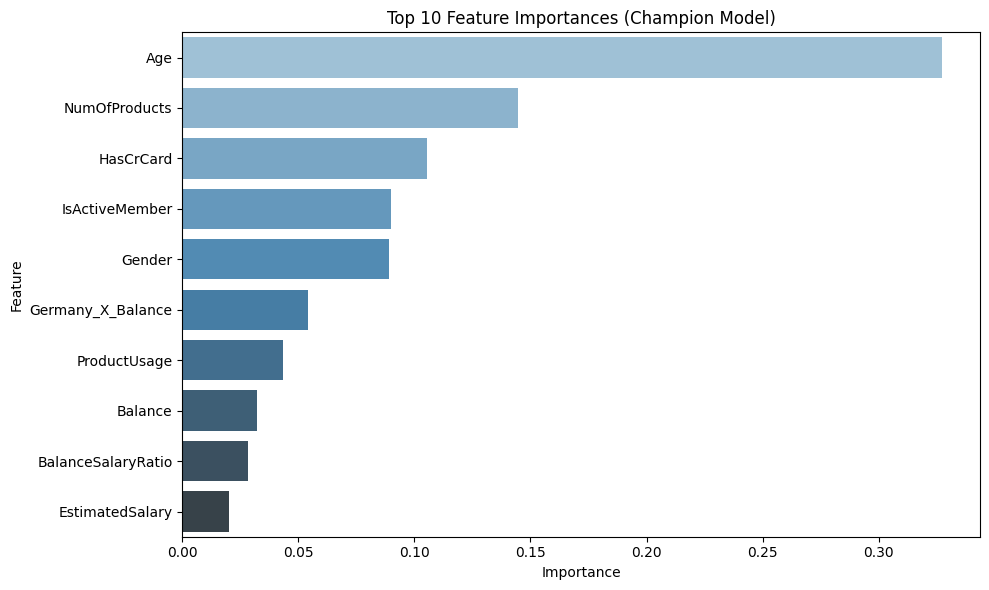
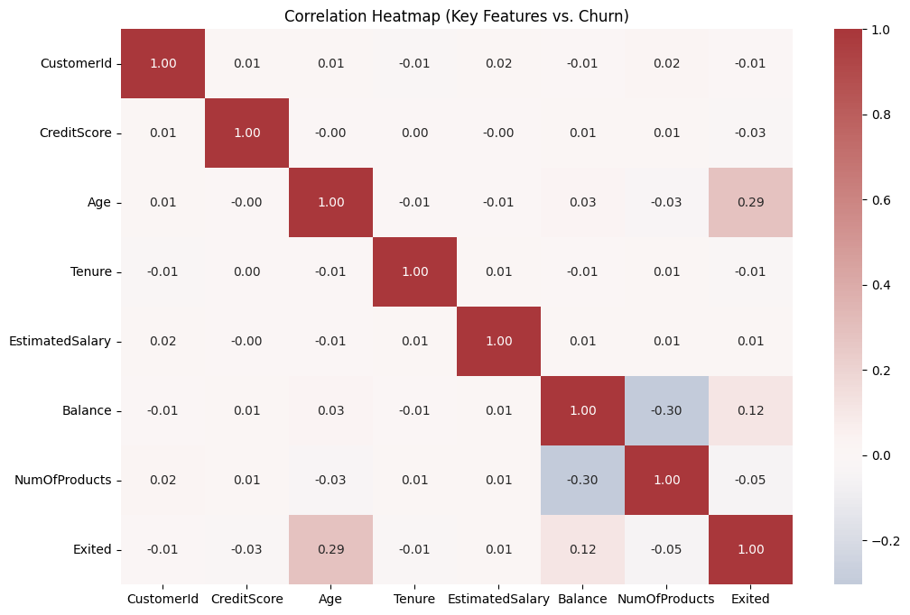
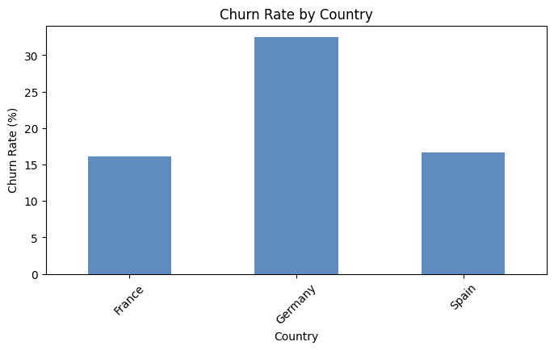
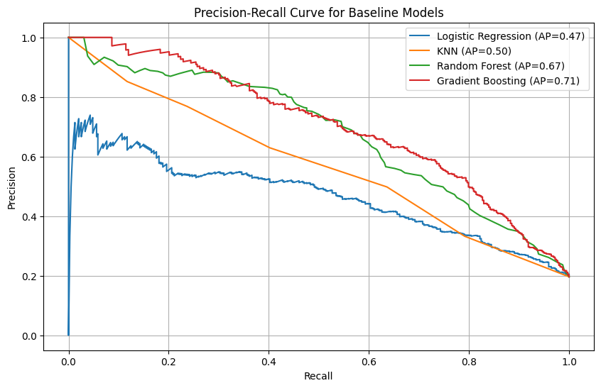

Retention Modeling & Operations
> Production-grade ML churn prediction pipeline achieving 74% recall on the at-risk segment — outperforming a rule-based baseline by 28 points through asymmetric loss modeling, SMOTE rebalancing, and threshold optimization calibrated to the actual cost of false negatives.
Recall (At-Risk Segment)
74%
vs. 46% Unweighted Baseline
Baseline Churn Rate
20%
Historical Revenue Leak
Model Champion
Gradient Boost
Optimized with SMOTE
Threshold Tuned To
0.45
Precision-Recall Optimized
Analysis Visuals

Technique: Feature Selection
Top Predictive Drivers
Age and number of products emerged as the strongest signals for model convergence.

Technique: EDA
Multivariable Correlation
Heatmap identified redundant features and validated hypothesized interaction terms.

Technique: Spatial Analysis
Geographic Churn Profile
Geographic cohort exhibited a unique churn profile tied specifically to account balance — surfaced by the interaction feature engineering.

Technique: Threshold Optimization
Precision-Recall Curve
Decision threshold tuned to 0.45 to maximize recall for high-risk accounts — accepting a controlled false positive rate aligned to campaign cost tolerance.
The Analytical Workflow
Data Preparation & Class Imbalance Resolution
Applied SMOTE to address the 85/15 base rate imbalance in the training dataset — without rebalancing, a naive model predicting "no churn" on all observations achieves 85% accuracy while being operationally useless. Engineered interaction features including BalanceSalaryRatio to capture subtle risk profiles missed by baseline models.
Hyperparameter Optimization
Utilized GridSearchCV and RandomizedSearchCV to optimize the Gradient Boosting champion model. Balanced complexity vs. accuracy to avoid overfitting to the training set while maintaining generalization on the held-out validation split.
Strategic Threshold Tuning
Rather than the default 0.5 cutoff, the classification threshold was tuned to 0.45 using the Precision-Recall curve — maximizing churn identification (74% Recall) while maintaining a precision level actionable for business retention interventions. The threshold choice was explicitly tied to the estimated cost ratio of false negatives vs. false positives.
Retention Levers
- • Offer deeper product integration to low-engagement accounts before they reach the 12–18 month churn window.
- • Trigger automated engagement sequences for accounts flagging as inactive — before the 30-day threshold, not after.
Structural Drivers
- • Month-to-month contracts churn at 3.5× the rate of annual contracts with equivalent tenure — contract structure is the primary structural lever.
- • Unresolved support tickets are a leading churn indicator available days before standard behavioral signals trigger.
Technical Stack
Analyst Summary
"Predictive churn modeling isn't about accuracy — it's about identifying the levers that can actually be pulled. By isolating inaction, product depth, and contract structure as the primary drivers, the model output maps directly to specific operational interventions rather than a list of probability scores."
GitHub Repository